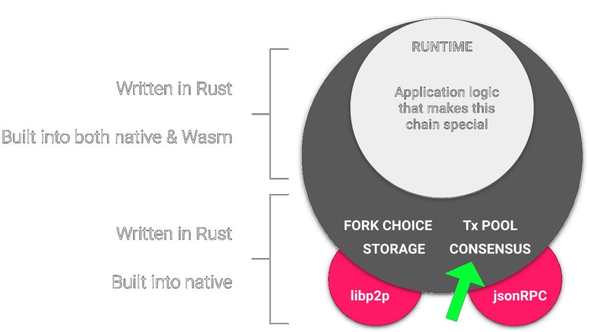
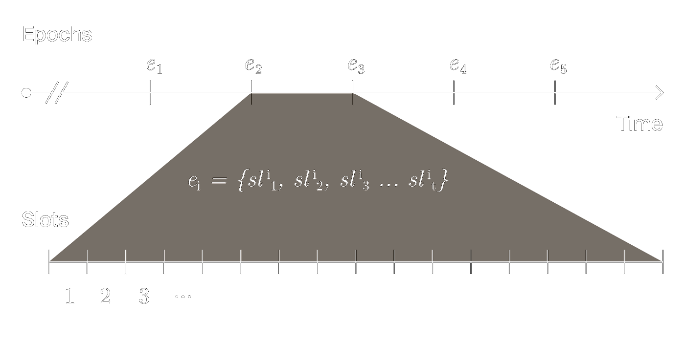
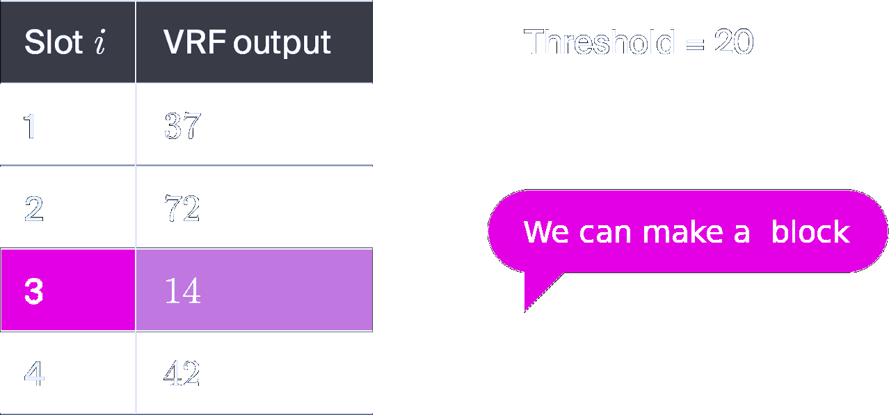
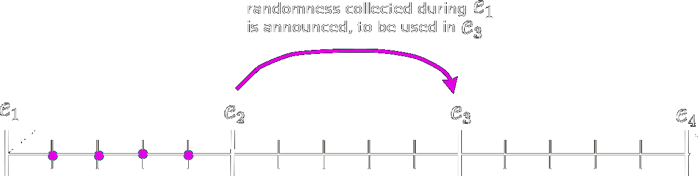
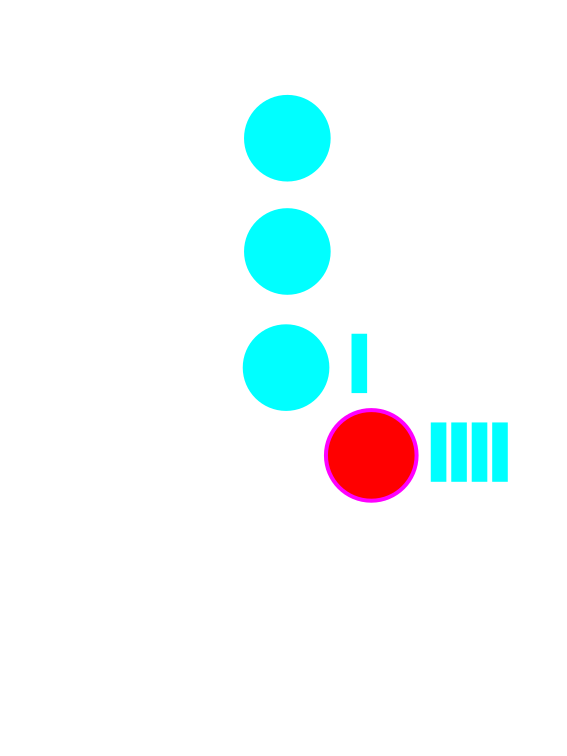
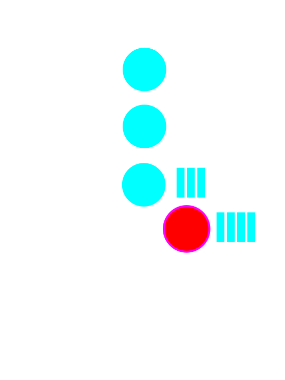
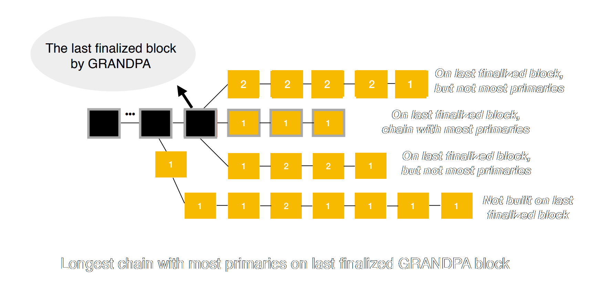
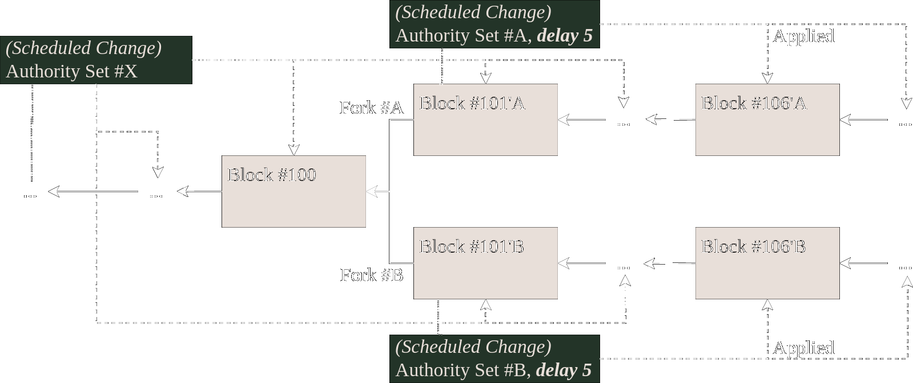
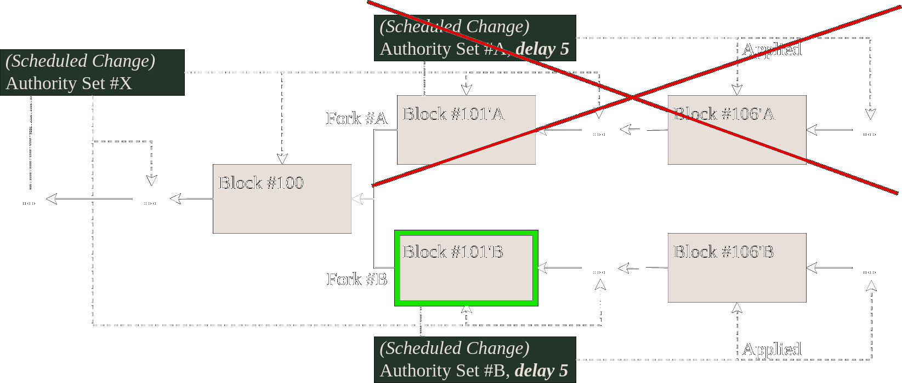

<!DOCTYPE html>
<html lang="en">
  <head>
    <meta charset="utf-8" />
    <meta name="viewport" content="width=device-width, initial-scale=1.0, maximum-scale=1.0, user-scalable=no" />

    <title>Consensus - Block Authoring and Finality</title>
    <link rel="shortcut icon" href="./../../../favicon.ico" />
    <link rel="stylesheet" href="./../../../dist/reset.css" />
    <link rel="stylesheet" href="./../../../dist/reveal.css" />
    <link rel="stylesheet" href="./../../../assets/styles/polkadot-theme.css" id="theme" />
    <link rel="stylesheet" href="./../../../css/highlight/shades-of-purple.css" />

    <link rel="stylesheet" href="./../../.././assets/styles/custom-classes.css" />
    <link rel="stylesheet" href="./../../.././assets/styles/polkadot-theme-base.css" />
    <link rel="stylesheet" href="./../../.././assets/styles/PBA-theme.css" />
    <link rel="stylesheet" href="./../../.././plugin/design-system/index.css" />

  </head>
  <body class="site">
    <header class="site-header">
      <a href="">
        
      </a>
      
    </header>
    <main class="site-reveal reveal">
      <article class="slides">
        <section  data-markdown><script type="text/template">

# Consensus

## Block authoring and Finality

<aside class="notes"><p>In this lecture, we will learn about the consensus protocols implemented in Substrate for block authoring (PoW, Aura and BABE) and finality (GRANDPA)</p>
</aside></script></section><section  data-markdown><script type="text/template">
## What is consensus?

The blockchain has a **state** which is updated by **executing** the **state transition function**

We **run** the **STF** by **creating** new **blocks** (block execution)

- How do we decide **who** gets to **author** the **next block**?

- How do we **reconcile** diverging **views** of the **current state**?

- How can we be sure that a certain **state** is **canonical** and will **never** be **reverted**?
</script></section><section  data-markdown><script type="text/template">
## What do we come to consensus on?

Consensus is a method for coming to **agreement** over a **shared state**

We want to come to **agreement** on what is the current **canonical block**



<!-- TODO DESIGN: this image is a draft -->

<aside class="notes"><p>The consensus protocols don&#39;t care about what the blocks are actually doing, it doesn&#39;t care about the STF other than knowing whether it succeeded or not.</p>
<p>The protocol is just &quot;blindly&quot; coming to consensus on what block hashes are canonical.</p>
</aside></script></section><section  data-markdown><script type="text/template">
## You are Here



<!-- TODO DESIGN: this image is a bit shitty but it conveys the right information, that consensus sits below the runtime and its mostly native code -->
</script></section><section  data-markdown><script type="text/template">
## Fork choice

**Given** two (or more) different **diverging states,**<br>how do we **choose** which is the **canonical fork**?

<aside class="notes"><p>We might need to follow multiple forks temporarily, but the fork choice rule also affects immediately the decision on which block to build on top of.</p>
</aside></script></section><section  data-markdown><script type="text/template">
## Finality

**Given** a certain **state / block** how certain can we be that it is **canonical**... and that it will **stay canonical**.

If we're certain that a block is canonical we consider it to be **finalized**.

<widget-text center>

This property can be either:

- Probabilistic
- Definite / Provable

<aside class="notes"><p>The practical notion we&#39;re trying to solve here is whether a given block is canonical or not, if it&#39;s not canonical it is possible that it might be reverted in the future.</p>
<p>Probabilistic finality is akin to eventual consistency, different nodes in the network might have different views of the canonical state at different times, but given enough time (unbound) they should all come to the same conclusion.</p>
</aside></script></section><section  data-markdown><script type="text/template">
## CAP Theorem


</script></section><section  data-markdown><script type="text/template">
## Proof of work

> Proof of work (PoW) is a form of cryptographic proof in which one party proves to others that a certain amount of a specific computational effort has been expended.

- **Hard** to generate the **proof**
- But **cheap** to **verify**
- Not a consensus mechanism by itself
</script></section><section  data-markdown><script type="text/template">
## Nakamoto consensus

**Anyone** can **extend** the blockchain: to do so **requires** a **proof** that a certain amount of **work** has been completed.

Given a fork always **follows** the **longest chain**
</script></section><section  data-markdown><script type="text/template">
## Nakamoto consensus

The PoW is a **Sybil deterrence** mechanism.

It is a **stochastic** process **weighted** by the relative **computational power** of participants.

The **fork choice** rule allows the participants to **eventually** reach **consensus**.

Finality is only _probabilistic_.

<aside class="notes"><p>Nakamoto consensus is eventually consistent so we don&#39;t have any definite notion of finality, only probabilistic.</p>
<p>As a certain block gets deeper in the history, the probability that it can be reverted gets lower and lower as doing so would require an enormous accumulated amount of computation. Still, it&#39;s non-zero.</p>
</aside></script></section><section  data-markdown><script type="text/template">
## PoW in Substrate

**Substrate** ships with a "nakamoto consensus" implementation

It **doesn't implement** any specific **PoW algorithm**: users of the framework can plug their own

[Kulupu](https://github.com/kulupu/kulupu) is a project built on Substrate that uses PoW-based consensus

<aside class="notes"><p><a href="https://github.com/paritytech/substrate/tree/master/client/consensus/pow">https://github.com/paritytech/substrate/tree/master/client/consensus/pow</a></p>
</aside></script></section><section  data-markdown><script type="text/template">
## Moving away from PoW

PoW-based is very **energy intensive**

The **work / computation** being performed is in itself **useless**

We are achieving Sybil resistance by **wasting** a **real-world resource** (i.e. energy)
</script></section><section  data-markdown><script type="text/template">
## Slot-based block authoring

**Unlike PoW** we must have a **closed set** of **authorities** with known identities

We **discretize time** into **slots** and at each slot we have a protocol to **decide** which of the authorities is **entitled** to **author** a block
</script></section><section  data-markdown><script type="text/template">
## Aura (authority-round)

At **each slot** the authorities are **chosen** in a **round-robin** fashion:

<widget-text style="font-size: 48px" center>

```rust
authority(slot) = authorities[slot % authorities.len()];
```

</widget-text>

1. The **chosen** authority is **allowed** to issue no more than **one block** during that slot
1. The **longest chain** is followed
</script></section><section  data-markdown><script type="text/template">
## Aura (authority-round)

**Pros**

**No wasted** energy, **simple** to implement and to reason about

**Cons**

**Attackable** since the full schedule of block production is known in advance

You can preemptively attack the next block author to **censor** it

<aside class="notes"><p>We can setup a DoS attack on all the authorities as they move from slot to slot preventing them from successfully broadcasting their blocks to the network.</p>
</aside></script></section><section  data-markdown><script type="text/template">
## Slots, but more like PoW?

We want to have a **slot-based** block authoring protocol that has **similar** properties to **PoW**.
Namely that we **don't know** who the **next** block **author** will be.

We want the **slot assignment** to be a **stochastic** process... but without the wasted energy.
</script></section><section  data-markdown><script type="text/template">
## ...see an RNG?

<widget-text style="font-size: 48px" center>

```rust
threshold = 1 / number_of_authorities

should_author = rng(seed) < threshold
```

</widget-text>

This is **similar** to what is happening with **PoW.**
<br/>
The **threshold** is **weighted** by **computation power** (unlike in this example)

- How can we **make sure** that the **random number** generated by an authority was **legitimate**?
- How can we use **randomness** in the face of a **deterministic** execution environment?
</script></section><section  data-markdown><script type="text/template">
## Verifiable Randomness Function

> A verifiable random function (VRF) is a public-key **pseudorandom function** that provides **proofs** that its **outputs** were calculated **correctly**.
> The owner of the **secret key** can **compute** the function value as well as an associated proof for any input value.
> Everyone else, using the **proof** and the associated **public key** can **check** that this value was indeed calculated **correctly**.

Can we **use** this primitive to **assign slots** to authorities?
</script></section><section  data-markdown><script type="text/template">
## BABE

<widget-text style="font-size: 60px" center>

**B**lind **A**ssignment for **B**lockchain **E**xtension
</script></section><section  data-markdown><script type="text/template">
## BABE

**BABE** is a **block production** mechanism
<br/>
inspired by the [Ouroboros Praos protocol](<https://en.wikipedia.org/wiki/Ouroboros_(protocol)>)

A **slot-based** block authoring algorithm using a **VRF** for **assignment**.
<br/>
**Nobody** knows who the **slot author** is until they prove it.

A deterministic **fallback** mechanism ensuring there will **always** be a **valid** slot **author**.

<aside class="notes"><p>Read the original Ouroboros Praos paper <a href="https://eprint.iacr.org/2017/573.pdf">here</a></p>
</aside></script></section><section  data-markdown><script type="text/template">
## BABE

<widget-columns>
<widget-column>

As with Aura we start with a **closed set** of known **authorities**.

**Time** is **discretized** into **slots**, and sets of slots are **grouped** into **epochs**.

</widget-column>
<widget-column>



</widget-column>
</widget-columns>
</script></section><section  data-markdown><script type="text/template">
## BABE

<widget-columns>
<widget-column>

Each **slot** can have a **primary** and **secondary** author (or "slot leader")

- **Primary** slots are assigned **randomly** (using a VRF)
- **Secondary** slots are assigned **deterministically** (with a similar mechanism as in Aura)

</widget-column>
<widget-column>


</widget-column>
</widget-columns>
</script></section><section  data-markdown><script type="text/template">
## BABE

<widget-columns>
<widget-column>

The **current slot** is a function of **"real-world" time**

```rust
current_slot = current_unix_time / slot_duration
```

</widget-column>
<widget-column>


</widget-column>
</widget-columns>

<aside class="notes"><p>In Polkadot, one epoch is 4 hours and on Kusama one epoch is only 1 hour.</p>
</aside></script></section><section  data-markdown><script type="text/template">
## Primary slots

At each slot authorities **evaluate** the **VRF**

VRFs **generate** a **pseudo-random output**<br>along with a **proof** that it was properly generated

<!-- prettier-ignore -->
\begin{align}
A_s(s,sk) &= VRF(seed,s,sk) < \tau \\\\
\tau &= 2 ^ {|l_{vrf}|} * (1- (1-c)^{\frac{1}{n}}) \\\\
0 &\leq c < 1
\end{align}

<widget-columns>
<widget-column>

<widget-text center>

$A_s$ = Slot Author<br>
$s$ = slot<br>
$sk$ = secret / private key<br>

</widget-text>

</widget-column>
<widget-column>

<widget-text center>

$\tau$ = threshold<br>
$n$ = number of authorities<br>
$c$ = threshold constant<br>

</widget-text>

</widget-column>
</widget-columns>

<aside class="notes"><p><code>c</code> is a constant that must be chosen in accordance to the expected maximum network latency and slot duration.</p>
<p>It is part of the security model of BABE and outside the scope of this presentation.</p>
<p>Equations and more details: <a href="https://research.web3.foundation/en/latest/polkadot/block-production/Babe.html">https://research.web3.foundation/en/latest/polkadot/block-production/Babe.html</a></p>
</aside></script></section><section  data-markdown><script type="text/template">
## Primary slots


</script></section><section  data-markdown><script type="text/template">
## Seeding the VRF

As with **any RNG** the VRF **needs** to take as **input** some **random material** (the seed)

We need to **generate random** material in a **deterministic** manner such that all **participants agree** on the **seed**

We will **collect entropy** from every **VRF output**
</script></section><section  data-markdown><script type="text/template">
## Seeding the VRF

As an **epoch progresses** every **VRF output** used by a primary slot is **stored**

At the **end** of the **epoch** the stored data is **concatenated**

We **hash** this **data** and use it as the **seed** for a **future epoch**
</script></section><section  data-markdown><script type="text/template">
## Using the VRF seed

The **randomness** computed at epoch $N$:

<widget-text center>

- is **announced** at the **beginning** of epoch<br>$N + 1$ (along with the authorities)
- and **used** on epoch $N + 2$

</widget-text>



<aside class="notes"><p>This <strong>guarantees</strong> that by the time an <strong>authority</strong> has <strong>registered</strong> their intention to validate they <strong>don&#39;t know</strong> what the <strong>randomness</strong> for the <strong>epoch</strong> in which they&#39;ll be <strong>active</strong> is</p>
</aside></script></section><section  data-markdown><script type="text/template">
## Primary slots

As with **PoW** the process of slot **attribution** is **stochastic**

Any **slot** can be assigned to **0, 1 or more validators**

Having **unassigned slots** leads to **variability** in **block times**, as **no** authority will be able to produce a **block** on that **slot**
</script></section><section  data-markdown><script type="text/template">
## Secondary slots

In order to **avoid empty slots** we assign all slots to a **secondary** validator

<widget-text style="font-size: 48px" center>

```rust
secondary_slot_author = hash(epoch_randomness ++ slot_number) % authorities_len
```

</widget-text>

This mechanism **guarantees** a **consistent block time**
</script></section><section  data-markdown><script type="text/template">
## Block predigest

```rust
pub enum BabePreDigest {
	/// A primary VRF-based slot assignment.
	Primary(PreDigest),
	/// A secondary deterministic slot assignment.
	Secondary(PreDigest),
}

pub struct PreDigest {
	/// Authority index
	pub authority_index: AuthorityIndex,
	/// Slot
	pub slot: Slot,
	/// VRF output
	pub vrf_output: VRFOutput,
	/// VRF proof
	pub vrf_proof: VRFProof,
}
```

A piece of **data** created by the **consensus protocol** and **added** to the block _**before**_ it gets **executed**.
This is mainly used to **pass consensus-related** information into the **runtime**.
</script></section><section  data-markdown><script type="text/template">
## Block seal

A **digest** that gets added to the block _**after**_ **execution**

It should serve as an **extra proof** that the given **validator** in fact **created** that **block**

It's **usually** just a **signature** of the **hash** of the **block** header


</script></section><section  data-markdown><script type="text/template">
## Fork choice rule for BABE

**Instead** of just following the **longest** chain

We want to **follow** the **chain** that has the **most primary** slots

- Since these are the **most secure** slots
- **Secondary** slots can easily be **censored** (as in Aura)
</script></section><section  data-markdown><script type="text/template">
### Fork choice rule for BABE


</script></section><section  data-markdown><script type="text/template">
## Provable finality

All **consensus** protocols presented **so far** only provide **probabilistic finality**

A **BFT consensus** protocol will achieve **provably / instant finality** as it is **strongly consistent**

- Given $N$ validators it **requires** $\frac{2}{3}N + 1$ validators to come to **agreement**
- $O(n^2)$ **communication** complexity

<aside class="notes"><p>The key thing to stress here is that BFT agreement is much slower as it requires a lot more communication.</p>
<p>Also it sacrifices liveness since $\frac{1}{3}$ of validators going offline halts the protocol.</p>
</aside></script></section><section  data-markdown><script type="text/template">
## Hybrid consensus

**Instead** of making the **block authoring** protocol **BFT** tolerant, we create a **gadget** to perform **BFT agreement** on top of an already **existing blockchain:**

- **Participants** of the protocol will **vote** on what they believe is the **best chain**
- i.e. what should be **finalized**

This way we use **different** protocols for block **authoring** and **finality:**

- Block authoring - eventually consistent, favors liveness, fast,
- Finality - strongly consistent, slow
</script></section><section  data-markdown><script type="text/template">
## GRANDPA

<widget-text style="font-size: 40px" center>

**G**HOST-based **R**ecursive **AN**cestor **D**eriving **P**refix **A**greement

<aside class="notes"><p>GHOST: Greedy Heaviest-Observed Sub-Tree</p>
</aside></script></section><section  data-markdown><script type="text/template">
## GRANDPA

The protocol **progresses** in **rounds**

Every **round** the validators are required to do **two rounds** of voting: **prevote** and **precommit**

At the **end** of every **round** participants are **guaranteed** to **reach consensus** on what **block** is **finalized**.
**Potentially** the **same** block that had been **previously finalized**.
</script></section><section  data-markdown><script type="text/template">
## GRANDPA


</script></section><section  data-markdown><script type="text/template">
## A GRANDPA Round

Each validator **broadcasts** a **prevote** for the **highest block** that it thinks **should** be **finalized**

- If the **supermajority** of validators are **honest**, this block **must extend** the chain that was previously finalized
- This **new chain** could be **several blocks** longer than the **last finalized** chain

<aside class="notes"><p>A <strong>validator</strong> that is designated as the <strong>primary</strong> broadcasts the highest block that it thinks could be final from the previous round</p>
</aside></script></section><section  data-markdown><script type="text/template">
## A GRANDPA Round


<aside class="notes"><ul>
<li>7 = # Validators</li>
<li>5 = # Threshold</li>
</ul>
</aside></script></section><section  data-markdown><script type="text/template">
## A GRANDPA Round


<aside class="notes"><ul>
<li>7 = # Validators</li>
<li>5 = # Threshold</li>
</ul>
</aside></script></section><section  data-markdown><script type="text/template">
## A GRANDPA Round

Each validator **computes** the **highest block** that can be **finalized based** on the set of **prevotes**

- i.e. we find the **common ancestor** of all votes that has **support** from **more** than $\frac{2}{3}N + 1$ validators
- We refer to this block as the **prevote GHOST**
</script></section><section  data-markdown><script type="text/template">
## A GRANDPA Round


<aside class="notes"><ul>
<li>7 = # Validators</li>
<li>5 = # Threshold</li>
</ul>
</aside></script></section><section  data-markdown><script type="text/template">
## A GRANDPA Round

We define the round **estimate** as the **highest ancestor** of the **prevote GHOST** for which it is **still possible** to **precommit**

- i.e. when **no precommit** votes have been **sent** out yet, then:

`estimate == prevote GHOST`
</script></section><section  data-markdown><script type="text/template">
## A GRANDPA Round


<aside class="notes"><ul>
<li>7 = # Validators</li>
<li>5 = # Threshold</li>
</ul>
</aside></script></section><section  data-markdown><script type="text/template">
## A GRANDPA Round

If the **estimate** extends the **last finalized** chain, then each validator will cast a **precommit** for that chain.

Each validator **waits** to receive **enough precommits** to be able to finalize

- We again find the **common ancestor** of the **estimate** which has **threshold precommits**
- We declare that **block** as **finalized**
</script></section><section  data-markdown><script type="text/template">
## A GRANDPA Round


<aside class="notes"><ul>
<li>7 = # Validators</li>
<li>5 = # Threshold</li>
</ul>
</aside></script></section><section  data-markdown><script type="text/template">
## A GRANDPA Round



<aside class="notes"><ul>
<li>7 = # Validators</li>
<li>5 = # Threshold</li>
</ul>
</aside></script></section><section  data-markdown><script type="text/template">
## A GRANDPA Round

The **round** is deemed **completable**:

- if the **estimate** is **lower** than the **prevote GHOST**
- or if it's **impossible** to have a **supermajority** on any **block higher** than the current **estimate**

Validators **start** a **new round** after it becomes **completable**.
</script></section><section  data-markdown><script type="text/template">
## A GRANDPA Round


<aside class="notes"><ul>
<li>7 = # Validators</li>
<li>5 = # Threshold</li>
</ul>
</aside></script></section><section  data-markdown><script type="text/template">
## A GRANDPA Round


<aside class="notes"><ul>
<li>7 = # Validators</li>
<li>5 = # Threshold</li>
</ul>
</aside></script></section><section  data-markdown><script type="text/template">
## A GRANDPA Round


<aside class="notes"><ul>
<li>7 = # Validators</li>
<li>5 = # Threshold</li>
</ul>
</aside></script></section><section  data-markdown><script type="text/template">
## A GRANDPA Round (Alt)


<aside class="notes"><ul>
<li>7 = # Validators</li>
<li>5 = # Threshold</li>
</ul>
</aside></script></section><section  data-markdown><script type="text/template">
## A GRANDPA Round (Alt)


<aside class="notes"><ul>
<li>7 = # Validators</li>
<li>5 = # Threshold</li>
</ul>
</aside></script></section><section  data-markdown><script type="text/template">
## A GRANDPA Round (Alt)



<aside class="notes"><ul>
<li>7 = # Validators</li>
<li>5 = # Threshold</li>
</ul>
</aside></script></section><section  data-markdown><script type="text/template">
## A GRANDPA Round (Alt)


<aside class="notes"><ul>
<li>7 = # Validators</li>
<li>5 = # Threshold</li>
</ul>
</aside></script></section><section  data-markdown><script type="text/template">
## GRANDPA Vote Messages

<widget-columns>
<widget-column>

```rust
/// A prevote for a block and its ancestors.
pub struct Prevote<Hash, Number> {
	/// The target block's hash.
	pub target_hash: Hash,
	/// The target block's number.
	pub target_number: Number,
}

/// A precommit for a block and its ancestors.
pub struct Precommit<Hash, Number> {
	/// The target block's hash.
	pub target_hash: Hash,
	/// The target block's number
	pub target_number: N,
}
```

</widget-column>
<widget-column>

```rust
/// A signed message.
pub struct SignedMessage<Hash, Number, Signature, Id> {
	/// The internal message which has been signed.
	pub message: Message<Hash, Number>,
	/// The signature on the message.
	pub signature: Signature,
	/// The Id of the signer
	pub id: Id,
}

/// A protocol message or vote.
pub enum Message<Hash, Number> {
	/// A prevote message.
	Prevote(Prevote<Hash, Number>),
	/// A precommit message.
	Precommit(Precommit<Hash, Number>),
	/// A primary proposal message.
	PrimaryPropose(PrimaryPropose<Hash, Number>),
}
```

</widget-column>
</widget-columns>

<aside class="notes"><p>GRANDPA supports weighted voting. For example, you could implement GRANDPA on your chain where validators with more stake get more votes.</p>
</aside></script></section><section  data-markdown><script type="text/template">
## Extending BABE's<br>fork choice rule



<aside class="notes"><p>The black blocks are finalized, and the yellow blocks are not.
Blocks marked with a &quot;1&quot; are primary blocks; those marked with a &quot;2&quot; are secondary blocks.
Even though the topmost chain is the longest chain on the latest finalized block, it does not qualify because it has fewer primaries at the time of evaluation than the one below it.</p>
</aside></script></section><section  data-markdown><script type="text/template">
## Updating the Validator Sets

So far we have **assumed** that the **validator set** is **static**

How do we go about **updating** the **validator set**?

**Where** does the **information** about **new validators** come from?
</script></section><section  data-markdown><script type="text/template">
## Updating the Validator Sets

The **information** about **new validators** comes from the **runtime**

It is **decided** by some **external process** (usually staking)

The **runtime** exposes this information to **external observers** through header **digests**.
All **consensus protocols** provide a **pallet** to manage **runtime state** (e.g. validator sets)

The **client-side consensus** code is responsible for **scraping** those **digests** as new blocks are imported and **react** accordingly

<aside class="notes"><p>One of the main reasons this process is done through header digests is to make sure it is light client friendly, since light clients do not execute the runtime.</p>
</aside></script></section><section  data-markdown><script type="text/template">
## BABE Validator Set Changes

```rust
/// Information about the next epoch. This is broadcast in the first block
/// of the epoch.
pub struct NextEpochDescriptor {
	/// The authorities.
	pub authorities: Vec<AuthorityId>,

	/// The value of randomness to use for the slot-assignment.
	pub randomness: Randomness,
}
```

```rust
let next_epoch = NextEpochDescriptor {
	authorities: ...,
	randomness: ...,
};

// Create the digest that will go in the header. A consensus engine id
// is used to be able to identify the source of a given consensus digest.
let log = DigestItem::Consensus(BABE_ENGINE_ID, next_epoch.encode());
<frame_system::Pallet<T>>::deposit_log(log)
```
</script></section><section  data-markdown><script type="text/template">
## BABE Validator Set Changes

Validator set **changes** are **applied** on block **import**. They are **announced** one epoch in **advance**.
When epoch $N$ starts we announce what the authorities for epoch $N+1$ will be.

We need to **keep track** of the **current** authorities per **fork**.
In principle **different forks** could rotate to **different validator sets**.
We can **discard** this information as **forks** get **finalized**.
</script></section><section  data-markdown><script type="text/template">
## GRANDPA Validator Set Changes

```rust
/// A scheduled change of authority set.
pub struct ScheduledChange<Number> {
	/// The new authorities after the change, along with their respective weights.
	pub next_authorities: AuthorityList,
	/// The number of blocks to delay.
	pub delay: Number,
}
```

```rust
let log = ConsensusLog::ScheduledChange(ScheduledChange {
	delay: 0,
	next_authorities: ...,
});

let log = DigestItem::Consensus(GRANDPA_ENGINE_ID, log.encode());
<frame_system::Pallet<T>>::deposit_log(log);
```
</script></section><section  data-markdown><script type="text/template">
## GRANDPA Validator Set Changes

Validator set **changes** are **applied** on **finality**.
This is how we **guarantee** that the **handoffs** are **secure**.

**At least** $\frac{2}{3}N + 1$ validators **signed off** on it.

They are **announced** for the **immediate** next session.

We also need to keep **track** of **forks**, even though they are only **enacted** on **finality**: they are **announced** through a **forkfull protocol**.
</script></section><section  data-markdown><script type="text/template">
## GRANDPA Validator Set Changes

Validator set **changes** applied on **finality** have some **non-obvious implications**.
If **more** than $\frac{1}{3}$ of authorities go **offline**, **BABE** will still **keep** making **progress**,
while **GRANDPA** will **stall**.

Which means that **validator set changes** will still **keep** being **signaled**...
But they **won't** be **applied** because **no blocks** are being **finalized**.

**GRANDPA** voters will need to **finalize** all the **signaled** validator set **changes** **in-order**.
**Honest** GRANDPA **voters** always **limit** their **votes** to the **first pending** validator set **change**.
</script></section><section  data-markdown><script type="text/template">
## GRANDPA Validator Set Changes


</script></section><section  data-markdown><script type="text/template">
## GRANDPA Validator Set Changes


</script></section><section  data-markdown><script type="text/template">
## Equivocations

We **assume** that **at most** $\frac{1}{3}$ of validators are **byzantine**.
<br/>
If that **threshold** is **passed** GRANDPA **breaks** (i.e. we can finalize conflicting blocks).

But we still **want** to **detect** such **faults / equivocations** before we reach that threshold,
and **punish** those validators:

- At the very least we may want to **remove** them from the **validator set**
- Assuming that we are in a **Proof-of-Stake** system we might want to **slash their deposits** as well
</script></section><section  data-markdown><script type="text/template">
## What is an equivocation?

<widget-text left>

Being **offline** / **unresponsive**:

- **Hard** to **detect** and **prove** effectively

**Double voting**:

- **Signing** two **conflicting** statements
- Potentially distributing them to distinct sets of peers
- **BABE** - a validator produces two distinct blocks at the same slot
- **GRANDPA** - a validator sends two distinct prevote / precommit messages on the same round

</widget-text>
</script></section><section  data-markdown><script type="text/template">
## Double vote equivocations

<widget-columns>
<widget-column>

**Proving** this **equivocation** is **easy**: we just need to **observe** the **two** (or more) **conflicting statements**.
The **statements** themselves **are** the **proof** since they **require** cryptographic **signatures**.

This could **not** have been **forged** by some attacker.

</widget-column>
<widget-column>

```rust
/// Represents a BABE equivocation proof. The proof
/// of equivocation are the given distinct headers that
/// were signed by the validator and which include the
/// slot number.
pub struct BabeEquivocation<Header, Id> {
	/// Returns the authority id of the equivocator.
	pub offender: Id,
	/// The slot at which the equivocation happened.
	pub slot: Slot,
	/// The first header involved in the equivocation.
	pub first_header: Header,
	/// The second header involved in the equivocation.
	pub second_header: Header,
}
```

</widget-column>
</widget-columns>
</script></section><section  data-markdown><script type="text/template">
## Reporting equivocations

Both BABE and GRANDPA **runtime pallets** include an **API** for **reporting equivocations**.

Whenever validators **observe** an **equivocation** they **create** a **proof** and send an extrinsic to **call** into `report_equivocation` API.

```rust
pub fn report_equivocation(
	origin: OriginFor<T>,
	equivocation_proof: Box<EquivocationProof<T::Hash, T::BlockNumber>>,
	key_owner_proof: T::KeyOwnerProof,
) -> DispatchResultWithPostInfo {
	// verify proof validity
	// create offence object
	// announce it to the rest of the runtime
}
```
</script></section><section  data-markdown><script type="text/template">
## Reporting equivocations

**Neither** BABE nor GRANDPA are **responsible** for **what** to **do** after an **equivocation** is **reported**.
<br/>
The remaining **pallets** in the **runtime** can be **notified** about the **offence** and react to it.

E.g. the **staking** pallet can **slash** the given validator

```rust
pub fn on_offence(
	offenders: &[OffenceDetails<Reporter, Offender>],
	slash_fraction: &[Perbill],
	session: SessionIndex,
	disable_strategy: DisableStrategy,
) -> Res;
```
</script></section><section  data-markdown><script type="text/template">
# The end! 🫠
</script></section>
      </article>
    </main>

    <script src="./../../../dist/reveal.js"></script>
    <script src="./../../../plugin/markdown/markdown.js"></script>
    <script src="./../../../plugin/highlight/highlight.js"></script>
    <script src="./../../../plugin/zoom/zoom.js"></script>
    <script src="./../../../plugin/notes/notes.js"></script>
    <script src="./../../../plugin/math/math.js"></script>

    <script type="module">
      import DesignSystem from "./../../../plugin/design-system/design-system.js"

      function extend() {
        var target = {};
        for (var i = 0; i < arguments.length; i++) {
          var source = arguments[i];
          for (var key in source) {
            if (source.hasOwnProperty(key)) {
              target[key] = source[key];
            }
          }
        }
        return target;
      }

      // default options to init reveal.js
      var defaultOptions = {
        controls: true,
        progress: true,
        history: true,
        center: true,
        transition: 'default', // none/fade/slide/convex/concave/zoom
        plugins: [
          RevealMarkdown,
          RevealHighlight,
          RevealZoom,
          RevealNotes,
          RevealMath,
          DesignSystem
        ]
      };

      // options from URL query string
      const queryOptions = Reveal().getQueryHash() || {};

      const options = extend(defaultOptions, {"width":1400,"height":900,"margin":0,"minScale":0.2,"maxScale":2,"transition":"none","controls":true,"progress":true,"center":true,"slideNumber":true,"backgroundTransition":"fade"}, queryOptions);
      options.baseUrl = '';
      Reveal.initialize(options);
    </script>
  </body>
</html>
